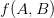
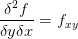
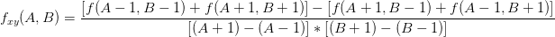

If you haven’t read the previous section on bicubic spline interpolation, now would be a good time!
As mentioned in the previous section, when we are performing bicubic interpolation, we are generating a smooth surface that interpolates data points on a 2D grid. Also, as previously mentioned…
Quote:
So, we can see that we have taken the original data set, and interpolated values in both the x and y dimensions to create a smooth surface. An important note: Notice how the interpolated dataset is smooth in the x-direction, y-direction, and the xy-direction (ie: along the diagonals). This means that for any point in our interpolated data set, we should be able to compute not only the intensity (ie: height/grayscale) value, but also it’s derivative in ANY direction along x, y, or xy. This is equivalent to us having the following data available to us (assume the grayscale intensity value from the source image, , at , and that we are trying to calculate the interpolated grayscale value in the target/output image, , at ) (Equations based on those provided in [1]):
- The original intensity values of the surrounding pixels (4 values)
- 
")
- The partial derivatives along the x-axis for each of these points (4 values)
- The partial derivatives along the y-axis for each of these points (4 values)
- The cross-derivatives at each of these points (4 values)
- 
This leaves us with a total of 16 values to solve for in the case of generalized bicubic interpolation, as opposed to the 4 needed with 1D cubic spline interpolation ( and ).
End Quote
I also mentioned in the previous section that bicubic spline interpolation is a special case of generalized bicubic interpolation. For the former of the two, we simply carried out 1D cubic spline interpolation along each axis and we were done. We aren’t making use of all the data available to us though, such as the cross-derivatives.
For each of the neighbouring 4 data points, we need to know its intensity value (), its partial derivatives along both axes ( and ), and finally, its cross-derivatives () before we can proceed any further. Before we proceed these, we need a coordinate system, as always. Notice how we now need to know the values of (1-h),(1-w), etc, whereas when we carried out bicubic spline interpolation we didn’t!
We can calculate the partial derivatives easily enough using centered differences, which are basically slope calculations using the intensity values, from adjacent pixels. For the partial derivative along the horizontal axis, , we can calculate it to be (assuming equal spacing between pixels in the source image):
Similarly, we calculate the partial derivative for the vertical axis at each neighbouring pixel by:
=\dfrac{f(A,B+1)-f(A,B-1)}{(B+1)-(B-1)}=\dfrac{f(A,B+1)-f(A,B-1)}{2}")
Finally, for the cross derivatives, we can calculate them by:
- 
- Therefore,
If the spacing between pixels is not equal (ie: you are only carrying out interpolation on part of an image rather than the whole thing), you will need to adjust the denominator values in the above equations. Note that even if you get these values wrong, the final result will still be smooth, just not as accurate!
With these values available, we can defined any interpolated value in our output/target image, , as a function of the pixels from our input image according to (refer to the grid coordinates in the figure above for visual definitions of A,B,J,K,h, and w):
However, before we can carry on, we need to solve for the coefficients, . Assuming that and are continuous over the interval , and that we redefine the values at the gridpoints of the source image, as , we can express all 16 coefficients of as follows (equations provided by [1]):
- Function values:
- X-Derivatives:
- Y-Derivatives:
- Cross-Derivatives (XY):
These coefficient values, combined with the previously calculated partial and cross-derivative values, form a set of linear equations which form a matrix equation of the general form . We will rewrite it in the form so that we don’t confuse the values for our matrices with those used in the equations above. Let:
&f(1,0)&f(0,1)&f(1,1)&f_x(0,0)&f_x(1,0)&f_x(0,1)&f_x(1,1)&f_y(0,0)&f_y(1,0)&f_y(0,1)&f_y(1,1)&f_{xy}(0,0)&f_{xy}(1,0)&f_{xy}(0,1)&f_{xy}(1,1)\end{array}\right)^T")
-

Coefficient Matrix for ‘a’-values

{kind=link}
Note that the refers to the transpose of these matrices, rather than an exponent (which would only make sense for a square matrix anyways). With these equations, we can use our favorite method (feel free to pick) of solving this set of linear equations to solve for the inverse of our weighting matrix, . Once this is done, we can save this matrix for use in any future implementations of bicubic interpolation, as there is no need to recalculate it again in the future. By simple matrix inversion (yes, you can do this by hand if you really want to, the matrix algebra is very simple, just time-consuming; it’d be better to do this with MATLAB), we get the inverted coefficient matrix, .
- =
{kind=link}
When is multiplied (via matrix multiplication of course) with our product matrix, , this gives us the values of each of the 16 coefficients in our matrix. We can now use the previously defined sigma-notation formula to determine the value of any interpolated data point using the formula:
The following MATLAB M-function demonstrates this algorithm in action:
Included below is a simple resampling of a 4×4 checkerboard pattern to a much larger resolution using the code above.
{kind=link}
Before concluding this section, I should note that there are many other resampling methods that are definitely worth reading up on, such as Lanczos, Hermite spline, Super Eagle, 2xSAI, HQn, and so on. Many of these algorithms are used in commerical products such as image processing software digital cameras, even console emulators. I will now conclude this section with a brief comparison of “bicubic spline interpolation” and “generalized bicubic interpolation”, and will show why the two are NOT the same.
First, observe the image pairs below. The first pair was generated by using bicubic spline interpolation, which was covered in the previous subsection, while the latter pair was generated with the generalized bicubic interpolation algorithm covered in this subsection (the two original smiley faces used are slightly different, but no matter):
{kind=link}
{kind=link}
If we observe the resampling smiley faces, we can see that both still have halos introduced due to our choice of resampling algorithms. One important difference exists between both of the sampled images, however – the former of the two (generated using bicubic spline interpolation) still demonstrates some sharp edges and even corners, while the latter does not. This is due to bicubic spline interpolation being a rough approximation of generalized bicubic interpolation at best, primarily due to it not making any use of the cross-derivatives of the source data.
References
[1] Numerical recipes in C the art of scientific computing. Cambridge: Cambridge UP, 1992. Print.
Thanks for your help.
Thank you for the help with this.
what next?
super!
i am currently researching on use of generalised bi-cubic interpolation to compute minimum residues in the datum transformation parameters in a first order geodetic network. please, i need more information on the use of this method of interpolation and that of kriging interpolation strategy. thanks
Hi there,
I suppose that x_scale and y_scale should be a ratio of either (dimensions) or (dimensions-1). In your code they are dimNew/(dimOld-1). Check what happens if you keep both dimensions the same – in your case pixel values change, although they shouldn’t.
I think that it should be dimNew/dimOld, because in this case doubling the image size keeps W and H equal only to 1’s and 0.5’s, ie exactly what they must be equal to. Haven’t checked the math, though…